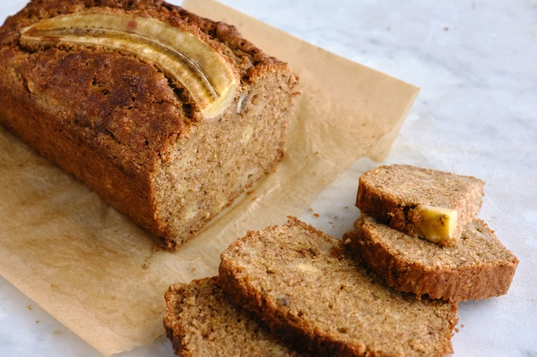

Banana Bread

Description
The beauty of this banana bread recipe is you don't need a fancy mixer! A mixing bowl, a fork to whisk the eggs, and a sturdy spoon to mix the batter are all you need. The sugar amount is flexible. The original recipe called for a cup of white sugar, but most people, including me, do just fine with 3/4 cup, and many are happy with 1/2 cup.
Ingredients
- 2-3 medium very ripe bananas, peeled and mashed
- 1/3 cup (76g) butter, unsalted or salted, melted
- 1/2 teaspoon baking soda (not baking powder)
- 1 pinch salt
- 3/4 cup (150g) sugar (1/2 cup if you would like it less sweet, 1 cup if more sweet)
- 1 large egg, beaten
- 1 teaspoon vanilla extract
- 1 1/2 cups (205g) all-purpose flour
Steps
- Preheat the oven and prepare the pan
- Mash the bananas and add the butter:
- Mix in the remaining ingredients
- Bake the bread